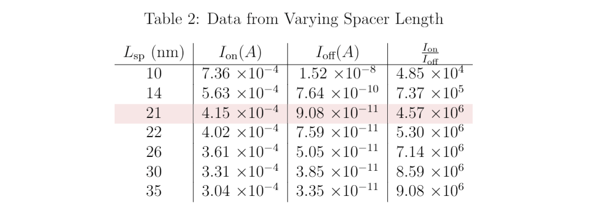

Student Organizations
Berkeley Formula Racing (Co-Lead: Su19-Sp20, Member: Fa18-Sp19)
I spent 2 very stimulating, fast-paced years with the Berkeley Formula Racing Team, most recently as Electrical Subsystem Co-Lead. In this organization, students design, build, and race a fully functional Formula-1 style racecar at the annual Formula SAE competition. I had the chance to work with a team of 60 remarkably dedicated fellow students with a similar passion for fast cars. We all spent 20 hours a week on the car, at the minimum! My first year, our team placed 16th place overall out of over 80 competitive college teams; our second year, we couldn't compete in person due to COVID-19 😔.
IEEE Professional Development (Director: Su19-Fa19, Officer: Fa18-Sp19)
Elected as Director of the Professional Development Committee for UC Berkeley's IEEE Student Branch, I helped organize over 20 events and originated a dozen new event ideas. The events spanned from Research Meet-and-Greets to help undergraduates engage with research to Technical Writing and Personal Website Design Workshops to help student build their communication skills and professional brand. IEEE introduced me to some of the brightest minds on campus, ensuring that I had a place to ask informed questions about classes and Berkeley life. I've been able to give some of this advice back as an IEEE mentor.
Class Projects
NMOS Device Design
In my EE 130 device design class, I used TCAD (Sentaurus Workbench) to numerically simulate the behavior of the custom-designed NMOS device. The channel length was specified at 25 nm based on the current 20 nm CMOS generation. The goal for this project was to become more familiar with how real-world transistors are designed, keeping specifications and tradeoffs in mind. We want to maximize active (on) current and decrease leakage (off) current. As an example, decreasing channel doping causes drain-induced barrier lowering (DIBL), leading to greater leakage current, but increases on-current (higher mobility, less ion-scattering). I explored the effects of such parameters and extracted useful information from the software’s simulation capabilities in order to optimize current consumption (Ion and Ioff), subthreshold swing, and transconductance. I furthermore used my knowledge of device physics to explain what implications a certain design decision would have, and the rationale behind my choices. As can be expected, most design parameters presented a tradeoff, and they interacted with each other in complex ways.
The software self-consistently solves the electrostatics equations for a given set of device parameters to numerically determine the current at different applied gate and drain voltages. It also constructs images of device layouts for visualization purposes. The parameters experimented with include channel doping, source/drain extension depths, various dopant concentrations, the gate-dielectric spacer length, and others. By optimizing the parameters, I achieved an I_on to I_off ratio of 1.04 * 1018, 21 times better than the default value. Please email me for a copy of the full report, including tables and figures outlining my findings such as the sample ones below.
Data from Experiments Run with Varying Dielectric Spacer Length Lsp. Default Shown in Red.
Graph of Current Consuption at Varying Dielectic Spacer Lengths (note Ion and Ioff tradeoff).
BJT/MOS Amplifier Designs
For my EE 105 class, our final labs consisted of single-stage BJT and MOS amplifier designs. In the preliminary labs, we characterized device behavior for a diode and BJT using a Semiconductor Parameter Analyzer (Agilent 4155C), connecting our experimentally observed curves to the physics behind them. We used SpaZilla, a Labview program, for instrument control and data acquisition. One of the important tasks at this stage was characterizing the capacitances; there was parasitic capacitance (from the breadboard and equipment) and component capacitance. By noting that these capacitances are in parallel, we could measure the cutoff frequency for different bias voltages, construct a graph, and linearly extrapolate the zero-bias capacitance.
Once we learned about DC biasing of transistors using resistive voltage dividers, we constructed amplifier circuits and measured performance with varying component values, experimentally and in simulation (LTspice). Figuring out a way to bias the circuits to maintain a temperature-independent bias point was challenging, but with practice, biasing and analyzing transistor-based circuit configurations became much more intuitive.
Cooke Triplet Optical Device Optimization
A Cooke Triplet is a 3-lens configuration that, when designed well, can entirely remove second-order aberrations (monochromatic and chromatic both) and function as an effective imaging device. However, each lens has two surfaces which can have varying radii of curvature and can be made of different materials, and the lenses have distances between them, so there are many variables involved.
We used Zemax Optical Studio for our analysis of the Cooke Triplet, and observed ray fan plots, spot diagrams, vignetting diagrams, and more to optimize the system. We also analyzed the parameter tolerances to gauge the most important variables (that is, which variables were most sensitive, and had to be given highest fine-tuning priority). For more details about the tools used and the design process, please see our presentation below, or our final report.
World Game Generation
Our final CS 61B project was to create a game; the core constraints were that the tile-based environment must be randomly generated, there must be some kind of avatar that is user controlled, and there must be a way to "win" or complete the game. We took these core concepts and built a remarkably intricate game that we and friends genuinely enjoyed playing, beyond just for the class. The gameplay was as follows:
Your avatar is a star, and you must explore each world (maze in a grid of tiles). Once you find the yellow door, it'll unlock, leading you to darker world. Several enemies intelligently chase you (dfs short-path finding, accounting for walls) as you move around the map; don't get caught! you have 3 lives to begin with, but don't worry; collect purple flowers for a chance to gain a life. Seems the flowers are on your side; the less health you have, the more likely they are to help you. As you traverse the map, the tiles you've already crossed become progressively darker, until after 3 passes, they become lava! Touching those will drain your life, so be sure to think ahead.
As a user, you can toggle the wall color scheme, see an interesting bit of background for the game, toggle a super-hard mode, and customize your gameplay. As a programmer, you can do so much more; alter the room-generation algorithm to make easer/harder maps, modify the enemy behavior, change the spawn frequency and helpfulness of flowers; the list is endless. Take a look below for an idea of how the game looks!
images: main screen, starting point, opaque levels 1 and 2, folklore, video: locked/unlocked doors, enemies chasing, music, etc.


Voice-Controlled Robot Car
todo
Other Projects
CalHacks 6.0 (Winner of Best Weights and Biases API Prize) (Nov. 2019)
todo
Ascend Case Competition (1st Place) (Oct. 2019)
todo